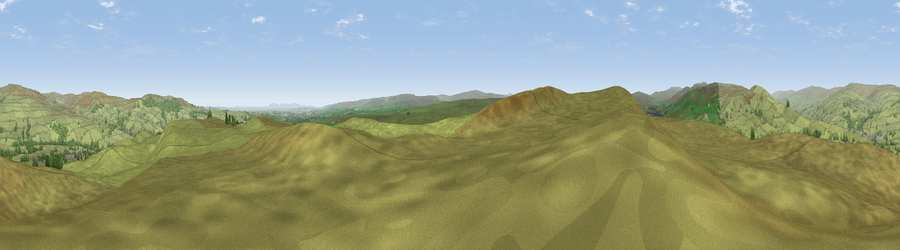

Viewpoint near Mickleton
#7969 in England · top 14% of its area beats it · near MickletonWhere it is
The exact computed spot (NY 95825 21875). Click the marker for map links.
The view, rendered

A 360° render of this exact spot computed from the terrain model, tree cover and land cover — summer colours, afternoon light, calibrated against photographs of famous viewpoints. Real trees, hedges and buildings will differ in detail.
The panorama
Grey silhouette: terrain skyline in each direction (720 bearings, Earth curvature and refraction included). Dashed green: skyline with trees (+15 m) and buildings (+8 m) as obstacles. Blue strip: how far the ground is visible on each bearing.
Where the view opens
Wedge length = distance to the farthest visible ground on that bearing (vegetation-aware). Rings at 10, 25 and 50 km.
What fills the view
95% grassland · 4% woodland ·
Angular shares of the visible panorama (visual magnitude), not map area. Landscape diversity 0.11 (0–1 Shannon).
Key numbers
More beautiful places nearby
The staircase of upgrades: each row has a higher view potential than everything closer. Driving times are estimates from straight-line distance, calibrated against real road routing — check an actual route before setting out.
| Place | Direction | Drive | Score |
|---|---|---|---|
| Viewpoint near Mickleton | WSW · 0 km | ~1 min | 69.7 |
| Viewpoint near Middleton-in-Teesdale | WNW · 4 km | ~8 min | 70.2 |
| Viewpoint near Eggleston | ENE · 6 km | ~13 min | 76.0 |
| Viewpoint c10024_7603 | SW · 26 km | ~42 min | 76.9 |
| Great Dun Fell | WNW · 27 km | ~43 min | 77.8 |
| Little Dun Fell | WNW · 28 km | ~44 min | 78.4 |
| Cross Fell | WNW · 30 km | ~47 min | 78.7 |
| Calders | SW · 39 km | ~58 min | 79.0 |
54.59205, -2.06613 · source: screening · position refined by local search. Computed location — check access rights before visiting.